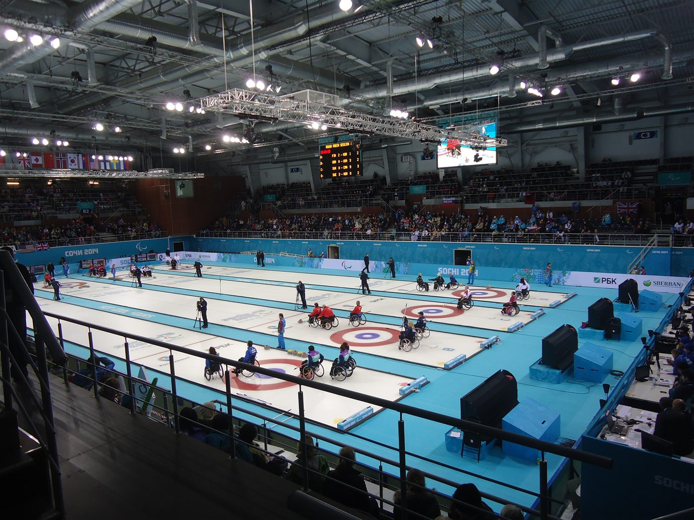
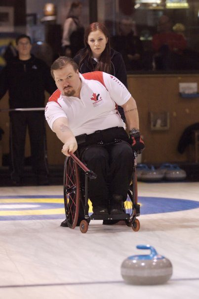
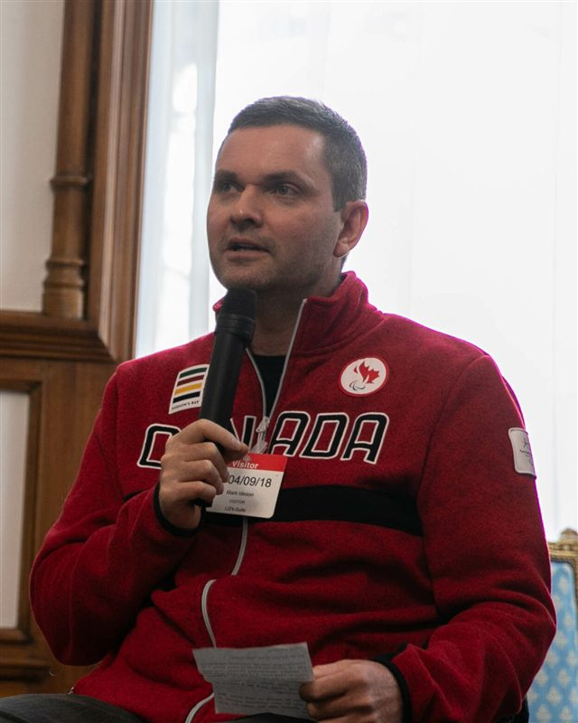
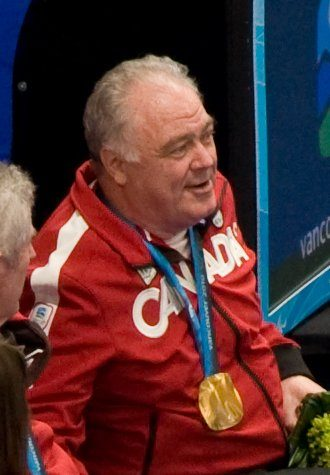

L'équipe mixte
Quatre joueurs, hommes et femmes mélangés : la mixité est obligatoire sur la glace.

8
Manches par match
0
Balayeur (interdit)
4
Joueurs mixtes par équipe
Le curling fauteuil reprend l'essence du curling — placer ses pierres le plus près du centre de la maison — joué par des athlètes en fauteuil roulant. Chaque équipe est obligatoirement mixte : elle aligne au moins un homme et une femme sur la glace.
Deux différences majeures avec le curling valide : il n'y a aucun balayage, et la pierre peut être lancée à la main ou poussée à l'aide d'un bâton de lancer (delivery stick), le fauteuil étant maintenu par un coéquipier. Sans balayage pour corriger la trajectoire, tout repose sur la précision du lancer et la stratégie.
Le Canada, mené par des skips comme Mark Ideson, fait figure de référence depuis l'entrée du sport au programme paralympique en 2006.

Quatre joueurs, hommes et femmes mélangés : la mixité est obligatoire sur la glace.
Le balayage est interdit : impossible de corriger la course de la pierre une fois lancée.
La pierre est poussée à la main ou via un bâton de lancer, le fauteuil tenu par un coéquipier.
Comme au curling : seule l'équipe la plus proche du centre (le bouton) marque des points.
Un match se joue en 8 ends (au lieu de 10), avec un temps de réflexion limité.
Sans balayage, le placement et la lecture de la glace deviennent encore plus décisifs.
Lieu
Mediolanum Forum, Assago — Milan
Capacité
≈ 12 700 places
Accès
Métro M2 — Assago Milanofiori Forum. Accès et tribunes PMR aménagés.
Billet
À partir de 20 € (round robin) · 70 € (finale)
Ambiance
Du silence et de la tension : « les échecs sur glace », version stratégie pure.

 Canada
Canada
Canada Canada
 Grande-Bretagne
Grande-Bretagne